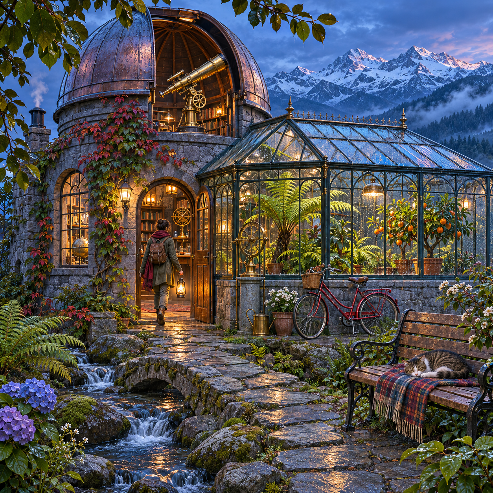

方图：只改变 size
1024x1024 / png → 1536x1024 / png
核查结果 · 55.53 秒
[
{
"path": "E:\\GitHubProject\\imagegen-formats-2026-11-07\\square\\square.png",
"warning": "image_size_mismatch",
"expected": "1024x1024",
"actual": "1536x1024"
}
]竖图：只改变 size
1024x1536 / png → 1536x1024 / png
核查结果 · 55.28 秒
[
{
"path": "E:\\GitHubProject\\imagegen-formats-2026-11-07\\portrait\\portrait.png",
"warning": "image_size_mismatch",
"expected": "1024x1536",
"actual": "1536x1024"
}
]SVG 矢量
1024x1024 / svg → 1536x1024 / png
核查结果 · 34.19 秒
[
{
"path": "E:\\GitHubProject\\imagegen-formats-2026-11-07\\svg\\svg.png",
"warning": "image_size_mismatch",
"expected": "1024x1024",
"actual": "1536x1024"
},
{
"path": "E:\\GitHubProject\\imagegen-formats-2026-11-07\\svg\\svg.png",
"warning": "output_format_mismatch",
"expected": "svg",
"actual": "png"
}
]方图：加入明确构图提示
1024x1024 / png → 1254x1254 / png

核查结果 · 58.12 秒
[
{
"path": "E:\\GitHubProject\\imagegen-formats-2026-11-07\\prompt-shapes\\square_prompt\\square_prompt.png",
"warning": "image_size_mismatch",
"expected": "1024x1024",
"actual": "1254x1254"
}
]